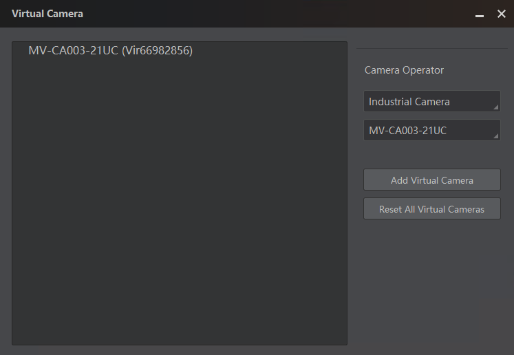
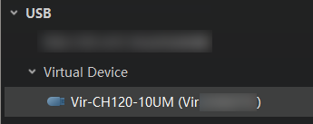

Virtual Camera is a tool designed for scenarios where constructing a
real setup of camera environment is not feasible. It can simulate cameras and help to
simplify tests during development stage.
-
Click to open the Virtual Camera window.
-
On the Virtual Camera window, select and add the camera models you want to
simulate.

Figure 1 Virtual Camera
Note
The supported virtual camera models are subject to the
displayed options.
The added virtual cameras will be displayed on the Device
List.

Figure 2 Virtual Camera
List
Note
If there is no virtual camera displayed, click to refresh.
-
Double-click a virtual camera to show the feature tree of the camera.
-
Select a pixel format
at
the Image Format Control
part.
-
Go to
C:\Windows\Temp\VirtualCamera\Cameras,
and find the file folder named by the virtual camera No.
-
Open the file folder, and then put images in the file folder named Mono8 or
RGB24.
Note
Make sure the resolution of the images is the same with the
resolution of the camera.
- Optional:
Perform further operations as needed on the Virtual Camera window.
-
Change Online Mode:
Right-click the virtual camera and click Change Online
Mode to switch its mode between online and
offline.
-
Delete a Virtual Camera:
Right-click the virtual camera you want to delete, and click
Delete
to delete it.
-
Reset All Virtual
Cameras: Click Reset All Virtual
Cameras to reset all added virtual cameras to
their
default settings.
Start acquisition of the camera to
play
the imported images.